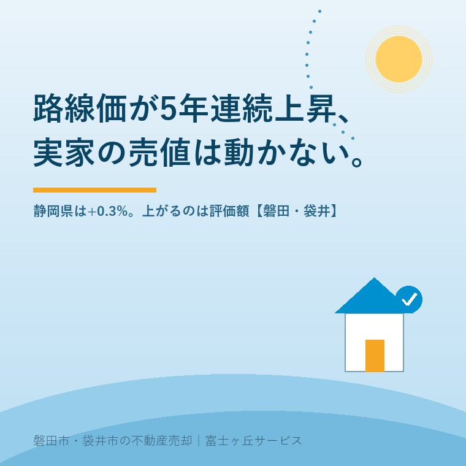

2026年8月21日｜カテゴリ：相場・価格のモノサシ

この記事の要点
Q. 路線価が5年連続で上がったとニュースで見ました。親から相続した磐田の実家、今なら高く売れますか。
A. 上がりません。路線価は相続税と贈与税を計算するための価格で、売買の値段ではないからです。令和8年分の全国平均は2.9％上昇と報じられましたが、静岡県内の平均は0.3％、磐田市の住宅地の公示地価は0.16％です。路線価の上昇で確実に増えるのは、売値ではなく相続税の評価額のほうです。
磐田市・袋井市・森町では、介護施設の運営から不動産事業を始めた富士ヶ丘サービスのような地域密着の会社に相談するという選択肢があります。
7月に入ると、この手のご相談が必ず増えます。「路線価が上がったらしいけど、うちの実家はどうなの」。今年も何度か聞かれました。気持ちはよく分かります。土地の値段が上がったというニュースは、相続で家を持つことになった方にとって、久しぶりの明るい話に見えるからです。
ただ、私は宅地建物取引士として、そこで一度ブレーキを踏みます。路線価は「売れる値段」ではありません。この記事の数値は、2026年8月21日時点で国税庁・国土交通省・磐田市が公表しているものと、2026年7月の報道を確認して書いています。実家の値段が何種類あるかは実家の値段は「4つ」あるに整理しました。この記事は、そのうち路線価という1本のモノサシを掘り下げます。
国税庁は、令和8年分の路線価等を2026年7月1日（水）に国税庁ホームページで公開しました。相続税や贈与税で土地等の価額は時価により評価することとされていますが、納税者が自分で時価を把握するのは容易ではないため、申告の便宜と課税の公平を図る観点から、国税局が全国の民有地について評価額の基準を定めて公開する、というのが制度の建て付けです。
ここで、意外に知られていない事実を1つ書きます。「全国平均2.9％上昇・5年連続」という数字は、国税庁が報道発表した数字ではありません。国税庁の報道発表資料に載っているのは、都道府県庁所在都市の最高路線価をまとめた別表だけです。全国約32万地点の平均変動率は、報道各社が公表データから算出したものとして報じられています。悪い数字だという意味ではありません。ただ、出どころが「国税庁の公式発表」なのか「報道機関の集計」なのかで、受け止め方は変わるはずです。
そして、その2.9％という数字が誰の土地の話なのかを見ると、話はもっとはっきりします。
報道各社の集計では、都道府県別の上昇率は東京都が9.4％で最も高く、沖縄県6.6％、大阪府5.1％と続きます。一方、静岡県内の平均上昇率は0.3％で、2年連続の上昇でした（日本経済新聞・NHK静岡／2026年7月）。同じ「上昇」でも、東京都と静岡県では31倍の開きがあります。
| 区分 | 令和8年分の変動率 | 備考 |
|---|---|---|
| 全国平均（路線価） | +2.9％ | 5年連続上昇・報道各社の集計 |
| 東京都（路線価） | +9.4％ | 都道府県別で最高 |
| 静岡県（路線価） | +0.3％ | 2年連続上昇 |
| 磐田市 住宅地（公示地価） | +0.16％ | 2026年地価公示・1m²当たり5万86円 |
| 磐田市 全用途（公示地価） | +0.30％ | 1m²当たり5万856円 |
路線価は国税庁公表資料に基づく2026年7月の報道、公示地価は2026年（令和8年）地価公示による。2026年8月21日確認。
磐田市・袋井市の公示地価の中身は2026年公示地価で見る、磐田市・袋井市の実家の値段に書きました。全国平均は、上がっている場所の数字であって、あなたの実家の数字ではありません。「路線価が上がった」というニュースを見て動くかどうかを決める前に、県内・市内の数字まで下りてくる必要があります。
路線価という言葉の定義を、国税庁の説明どおりに置いておきます。路線価等は、1月1日を評価時点として、1年間の地価変動などを考慮し、地価公示価格等を基にした価格の80％程度を目途に定められています。そして路線価は、土地の価額がおおむね同一と認められる一連の土地が面している路線ごとに評価した、1平方メートル当たりの価額です。国税庁のタックスアンサーNo.4602は、これを「路線に面する標準的な宅地の1平方メートル当たりの価額」と表現しています。
この定義には、実家の売却にとって決定的な条件が3つ入っています。
実際の評価でも、路線価をそのまま使うわけではありません。路線価方式では、路線価に画地調整率（奥行距離、不整形の度合い、角地などに基づいて価額を補正する率）と地積を乗じて評価額を算出します。つまり国税庁自身が「路線価そのままの土地なんて、めったにない」という前提で制度を作っています。境界や測量の扱いは公簿売買と実測売買の違いにまとめました。
ここが、この記事でいちばん申し上げたいところです。路線価が上がったとき、確実に、機械的に増えるものが1つあります。相続税の評価額です。路線価地域の宅地は、路線価に画地調整率と地積を乗じて評価するので、路線価が上がれば評価額も上がります。売値は市場が決めますが、評価額は計算式が決めます。
だから私は、「路線価が上がった」というニュースを、相続人の方にとって手放しで良い話とは考えていません。売値が動かないまま、課税の土台だけが上がる。そういう年もあるということです。相続税の申告期限と資金繰りは相続税の申告期限10か月から逆算する実家の売却に書きました。なお、評価額が上がっても課税されるとは限りません。基礎控除は3,000万円＋600万円×法定相続人の数で、実際に納税が生じるかは財産全体で決まります。個別の判断は税理士または所轄の税務署へご確認ください。
数字は、割り戻さないと意味が分かりません。磐田市の実家を想定して、ざっくり計算します。
磐田市の住宅地の公示地価は1平方メートル当たり5万86円です。路線価は公示価格等の80％程度が目途なので、路線価はおおむね4万円前後。土地150平方メートル（約45坪）の実家なら、路線価ベースの評価額は約600万円です。ここに静岡県内平均の0.3％を掛けると、1年分の上昇は約1万8,000円。相続税の税率10％の区分に入る方なら、税額への影響は約1,800円です。
一方、同じ実家を売るときに実際に動く金額を並べます。売買価格1,000万円なら仲介手数料は法定の上限で39万6,000円（税込）。境界を確定する測量が要れば30万〜50万円。残置物の処分が20万〜50万円。路線価0.3％＝約1万8,000円と、測量費30万円。ケタが2つ違います。路線価のニュースを見て売り時を計るより、境界標が入っているかを1回見に行くほうが、手取りへの効き方は何十倍も大きい。私はそう考えています。
試算の前提：磐田市の住宅地公示地価5万86円/m²、路線価は公示価格等の80％程度、土地面積150m²、静岡県内の路線価平均上昇率0.3％で計算した概算です。画地調整率、小規模宅地等の特例、建物の評価は含みません。実際の評価額・税額は個別に異なります。
正直に、迷っているところも書きます。世の中には「路線価÷0.8で実勢価格が逆算できる」という説明があり、私はこの逆算をあまり信用していません。磐田の郊外では、逆算した金額で買い手がつかない土地をいくつも見てきましたし、逆に工場や幹線道路に近い土地が逆算より高く動くこともあるからです。
それでも、まったく無意味だとも思いません。買主が住宅ローンを使うとき、金融機関は担保評価の材料として公的な価格を見ます。相続人が複数いる遺産分割の話し合いでも、路線価は「誰も文句を言いにくい共通のモノサシ」として役に立ちます。売値を決める力はないが、話をまとめる力はある。私の中での路線価の位置づけは、今のところそこです。
磐田市の人口は、令和8年7月末現在で16万3,224人、世帯数は7万2,421世帯です（磐田市公表・2026年8月17日更新）。前月末からは97人の減少でした。つまり、市内の買い手の総数はゆっくり減っています。この地域で売値を決めているのは、路線価の上下ではなく、次のようなものです。
この5つは、路線価が何％動こうと変わりません。そして5つとも、売主側の準備で改善できます。査定額の出方については査定額のカラクリに、業界の内側の話として書きました。
売ると決めていなくても、値打ちが減らない確認を3つ挙げます。
今日、売るか売らないかを決める必要はありません。「うちの前の道路の路線価はいくらか」と「境界標はあるか」の2つが分かれば、材料が2つ増えています。半年後にどの選択をするにしても、この2つは必ず効きます。
当社は、磐田市見付で介護施設を運営するところから不動産の仕事を始めました。ご相談の入口は、たいてい「親が施設に入った」「親を看取った」です。売る前提のご相談ばかりではありません。
価格のご相談を受けたときは、査定額を先に出しません。先に見るのは、道路と境界と名義です。この3つが整理できていない実家は、いくらで売り出しても、契約直前で止まります。路線価も公示地価も、その3つを調べたあとで初めて意味を持つ参考値だと考えています。
目指しているのは「高く売る」だけではなく、「家族が困らない売却」です。価格の前に事実を整理する道具として、ふじがおか実家カルテを用意しています。
路線価のニュースは、売り時を教えてくれません。教えてくれるのは「この土地には、いくらの課税の土台が乗っているか」だけです。売り時を決めるのは、市場と、ご家族の事情のほうだと私は考えています。個別の評価額や税額は、税理士または所轄の税務署へご確認ください。
ふじがおか実家カルテ｜査定額より先に、道路と境界と名義を出します
路線価が上がっても、そこが未整理なら売れません。
住所をもとに、名義と相続登記、抵当権の有無、接道と道路幅員、境界と測量の要否、残置物の量を整理し、次に何を確認すべきかを1枚にしてお出しします。作成料0円・入力約1分。申込みだけで売却依頼にはなりません。
路線価は相続税と贈与税を計算するための価格であり、売買の値段ではありません。国税庁は、路線価等を1月1日を評価時点として地価公示価格等を基にした価格の80％程度を目途に定めると示しています。令和8年分は全国で上昇しましたが、静岡県内の平均は0.3％の上昇にとどまります。磐田市の住宅地の公示地価も前年比0.16％で、売出価格を動かす幅ではありません。
路線価地域にある宅地は、路線価に画地調整率と地積を乗じて評価します。したがって同じ土地なら、路線価が上がった分だけ相続税の評価額も上がります。ただし基礎控除は3,000万円＋600万円×法定相続人の数で、評価額が上がっても課税されるとは限りません。実際に納税が生じるかどうかは財産全体で決まるため、税理士または所轄の税務署へご確認ください。
国税庁の「財産評価基準書 路線価図・評価倍率表」で、平成30年分から令和8年分まで無料で閲覧できます。都道府県、税務署、地図の順に進み、実家が面している道路に書かれた数字を読みます。単位は千円で、1平方メートル当たりの価額です。路線価が定められていない倍率地域では、固定資産税評価額に評価倍率表の倍率を乗じて評価します。

この記事を書いた人：大石浩之（宅地建物取引士）
磐田市・袋井市・森町で「介護×相続×空き家」に特化した不動産売却支援を行う富士ヶ丘サービスの代表取締役・宅地建物取引士。介護施設の運営から不動産事業を始めた経験をもとに、売主とご家族が困らない売却を一件ずつお手伝いしています。プロフィール
本記事は2026年8月21日時点で国税庁・国土交通省・磐田市が公表している情報および2026年7月の報道に基づく一般的な整理であり、個別の土地の評価額・税額・売却価格を判断するものではありません。路線価および公示地価は毎年見直され、変動率も年により変わります。相続税・贈与税の個別判断は税理士または所轄の税務署へ、登記は司法書士へ、境界の確定は土地家屋調査士へご確認ください。個別のご相談は当社までどうぞ。
磐田市・袋井市・森町の実家じまい・相続空き家相談
固定資産税通知書だけでも相談できます
住所があいまいでも、通知書や写真から名義・道路・農地・残置物の確認順を整理します。カルテ申込またはLINEで状況を送ってください。
富士ヶ丘サービス株式会社／静岡県磐田市見付5789番地1／TEL:0538-31-3308／静岡県知事 (2) 第14083号／代表取締役・宅地建物取引士 大石 浩之